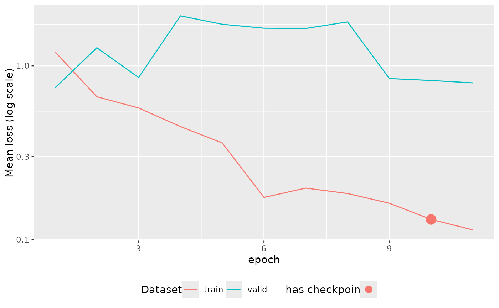

Plot tabnet_fit model loss along epochs
autoplot.tabnet_fit(object, ...)
autoplot.tabnet_pretrain(object, ...)A tabnet_fit or tabnet_pretrain object as a result of
tabnet_fit() or tabnet_pretrain().
not used.
A ggplot object.
Plot the training loss along epochs, and validation loss along epochs if any.
A dot is added on epochs where model snapshot is available, helping
the choice of from_epoch value for later model training resume.
library(ggplot2)
data("attrition", package = "modeldata")
attrition_fit <- tabnet_fit(Attrition ~. , data=attrition, valid_split=0.2, epoch=11)
# Plot the model loss over epochs
autoplot(attrition_fit)
